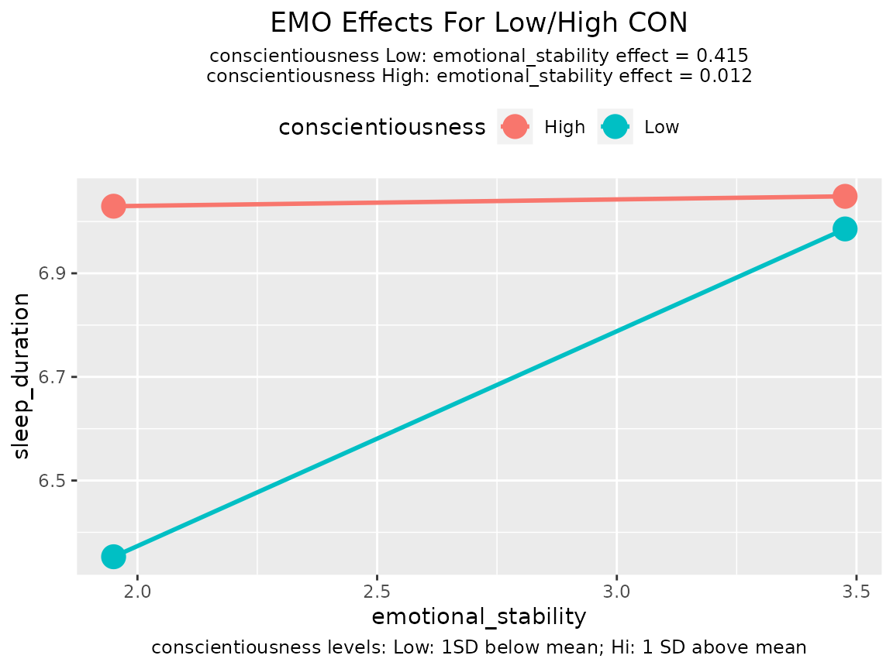
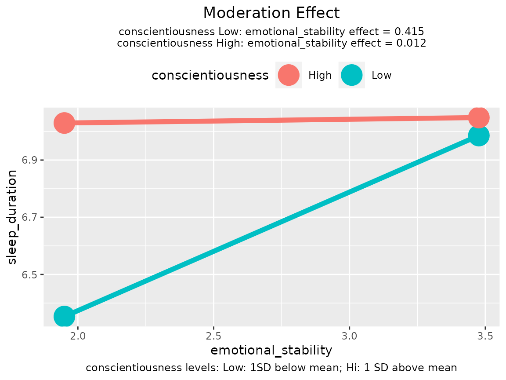
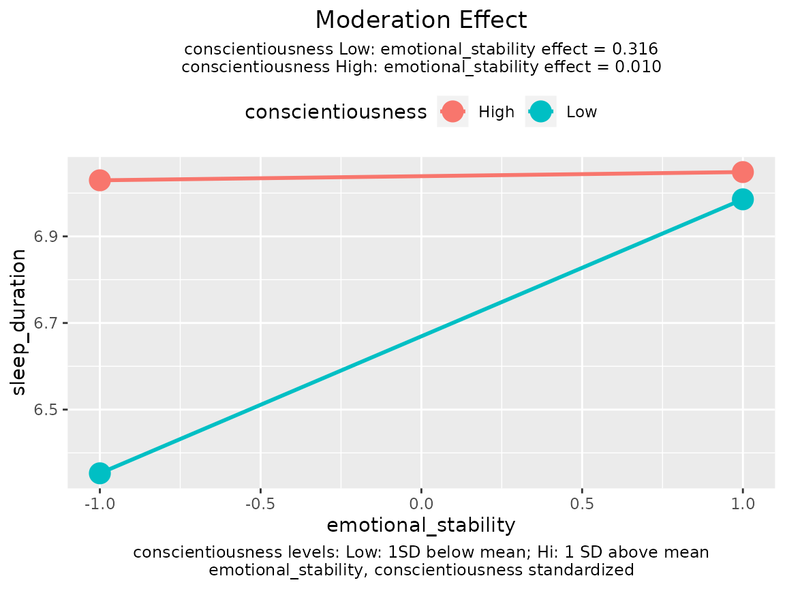
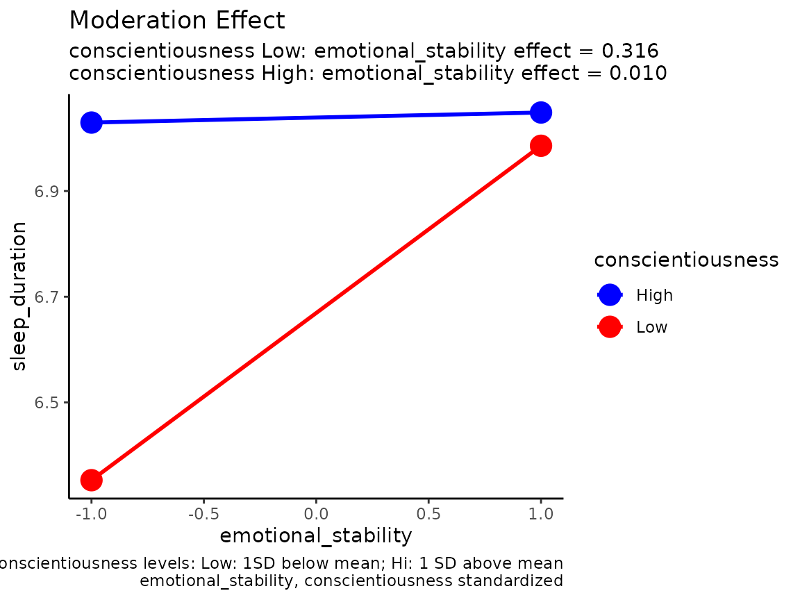

Moderation Effects Plots by plotmod()
Shu Fai Cheung
2022-08-27
Source:vignettes/plotmod.Rmd
plotmod.RmdWhat plotmod() Can Do
It can visualize a moderation effect by plotting the effect of the predictor (focal variable) on the outcome variable (dependent variable) for different levels of the moderator:
It can also plot a tumble graph (Bodner, 2016), in which the width of each line depends on the distribution of the predictor (focal variable) in each level of the moderator:
plotmod() is not designed to be a versatile tool. It is designed to be a function “good-enough” for common scenarios. The output of plotmod() is a ggplot object and so can be further manipulated by functions from the ggplot2 package.
Major Arguments
Model, Predictor (x), and Moderator (w)
output: The output oflm(),std_selected(), orstd_selected_boot(), with at least one interaction term.x: The predictor (focal variable). The variable in the horizontal axis.w: The moderator. The variable for which the conditional effects will be plotted.
These are the only required arguments. Just setting them can generate the graph:
library(stdmod)
data(sleep_emo_con)
lm_raw <- lm(sleep_duration ~ age + gender +
emotional_stability * conscientiousness,
sleep_emo_con)
plotmod(lm_raw,
x = "emotional_stability",
w = "conscientiousness")
Levels of the Moderator
Numeric Moderators
If the moderator is a numeric variable, then two lines will be drawn, by default. One line for one standard deviation (SD) below the mean on the moderator (“Low”), and the other for one SD above the mean (“High”).
Users can also use percentiles to define “Low” and “High” by setting w_method to "percentile". By default, 16th percentile and 84th percentile are used, which correspond approximately to one SD below and above mean, respectively, for a normal distribution.
Tumble Graph
By default, each line starts from one SD below mean of the predictor to one SD above mean of the predictor. This assumes that variation of the predictor is the same for different levels of the moderator. However, this may not be the case when the predictor and the moderator are associated. Bodner (2016) proposed a type of graph called tumble graph that can show the association between the predictor and the moderator, if any.
The idea is simple. Instead of using the SD of the predictor in the whole sample, the mean and SD of the predictor for the selected level of the moderator is used. (See the technical notes below on how it is implemented in plotmod().)
To plot a tumble graph, just set graph_type to "tumble":
lm_raw <- lm(sleep_duration ~ age + gender +
emotional_stability * conscientiousness,
sleep_emo_con)
plotmod(lm_raw,
x = "emotional_stability",
w = "conscientiousness",
graph_type = "tumble")The graph above shows that, the distribution of the predictor shifts to the left when the moderator is low.
Decoration and Annotation
Variable Labels
By default, the variable names are used in the graph. Users can supply labels that will be used instead of variable names by setting x_label, w_label, and y_label to strings for the predictor, moderator, and outcome variable, respectively.
Title
The default title is “Moderation Effect”. This can be changed via the argument title:
lm_raw <- lm(sleep_duration ~ age + gender +
emotional_stability * conscientiousness,
sleep_emo_con)
plotmod(lm_raw,
x = "emotional_stability",
w = "conscientiousness",
title = "EMO Effects For Low/High CON")
Some journals require submitted figures to have no title because they will be described by figure captions, supplied separately. The title can be disabled by setting no_title to TRUE.
Line Width and Point Size
plotmod() supports basic control of the lines. The width of the lines can be set by line_width and the size on the end-points can be set by point_size:
lm_raw <- lm(sleep_duration ~ age + gender +
emotional_stability * conscientiousness,
sleep_emo_con)
plotmod(lm_raw,
x = "emotional_stability",
w = "conscientiousness",
point_size = 8,
line_width = 2)
Information
Conditional Effects
By default, plotmod() prints the conditional effects of the predictor as a subtitle. This can be disabled by adding a ggplot2::theme() call to the output and set plot.subtitle to element_blank(), which removes the subtitle:
Definitions of the Levels of the Moderator
By default, the definitions of the levels of moderator (e.g., one SD below mean for “Low” and one SD above mean for “High”) are printed as a caption. This can also be disabled by adding a ggplot2::theme() call and set plot.caption to element_blank():
lm_raw <- lm(sleep_duration ~ age + gender +
emotional_stability * conscientiousness,
sleep_emo_con)
p <- plotmod(lm_raw,
x = "emotional_stability",
w = "conscientiousness")
p + theme(plot.caption = element_blank())Any Variables Standardized?
If the output is generated by std_selected() or std_selected_boot(), plotmod() will try to detect if a variable is standardized or not, and report this in the graph:
lm_raw <- lm(sleep_duration ~ age + gender +
emotional_stability * conscientiousness,
sleep_emo_con)
lm_std <- std_selected(lm_raw,
to_center = ~ emotional_stability + conscientiousness,
to_scale = ~ emotional_stability + conscientiousness)
plotmod(lm_std,
x = "emotional_stability",
w = "conscientiousness")
If the predictor, moderator, and outcome variable are all standardized, then the moderation effect is standardized moderation effect (Cheung, Cheung, Lau, Hui, & Vong, 2022), and the conditional effect printed on the graph are the standardized effects of the predictor for different levels of the moderator.
If which variables are standardized will be reported in the main text and so the figure does not need to report this, set note_standardized to FALSE.
Tweak the Graph
The output of plotmod() is a ggplot object. Therefore, it can be manipulated by functions that modify a ggplot object. For example, users can change the colors of the lines and the theme:
lm_raw <- lm(sleep_duration ~ age + gender +
emotional_stability * conscientiousness,
sleep_emo_con)
p <- plotmod(lm_std,
x = "emotional_stability",
w = "conscientiousness")
p + scale_color_manual(values = c("blue", "red")) +
theme_classic()
Technical Notes for Tumble Graph
Bodner (2016) proposed regressing the predictor on the moderator. plotmod() uses a nonparametric approach.
If the moderator is numerical, for a level of moderator, say, one SD below mean, a certain percentage of cases (about 16% of cases above and below this value of the moderator) is used to compute the mean and SD of the predictor, which will be used to determine the end-points of the line segment for this level.
If the moderator is categorical, then the mean and SD of all cases in each group will be used to the determine the end-points of a line segment.
Further Information
Please refer to the help page of plotmod() for other options available.
Reference
Bodner, T. E. (2016). Tumble graphs: Avoiding misleading end point extrapolation when graphing interactions from a moderated multiple regression analysis. Journal of Educational and Behavioral Statistics, 41(6), 593-604.
Cheung, S. F., Cheung, S.-H., Lau, E. Y. Y., Hui, C. H., & Vong, W. N. (2022) Improving an old way to measure moderation effect in standardized units. Health Psychology, 41(7), 502-505. https://doi.org/10.1037/hea0001188.